Aucune condamnation n'est intervenue à ce jour. Les qualifications pénales relèvent des juridictions compétentes. Des contestations sont pendantes devant la Cour constitutionnelle du Bénin.
L'ENQUÊTE
CONTRE ELLE-MÊME
CONTRE ELLE-MÊME
L'instruction du commissaire principal Sabi Fulbert Konto, acte par acte
CE QUI A ÉTÉ FAIT
CE QUI A ÉTÉ ÉCRIT
① « Dans ladite plainte, Gilles Sixte conteste le testament laissé par son feu père »
② « à la lecture du testament […] son père a déclaré : lui avoir acheté la parcelle sise au lot 488 »
③ « il est supposé détenir les documents relatifs à ladite parcelle »
④ « Cette décision de justice ayant autorité de la chose jugée est non assorti de recours »
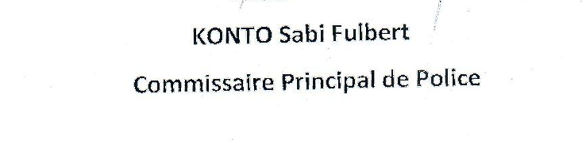
Mémoire n° 268/2025 du 29 avril 2025 : signature de Sabi Fulbert Konto
CE QUI A ÉTÉ FAIT
CE QUI A ÉTÉ ÉCRIT
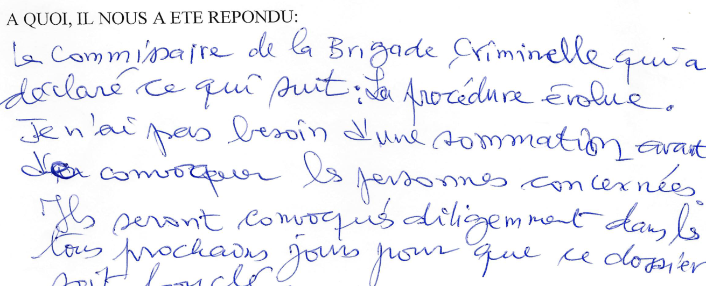
Sommation interpellative du 3 avril 2024 (acte d'huissier) : réponse consignée du commissaire de la Brigade criminelle
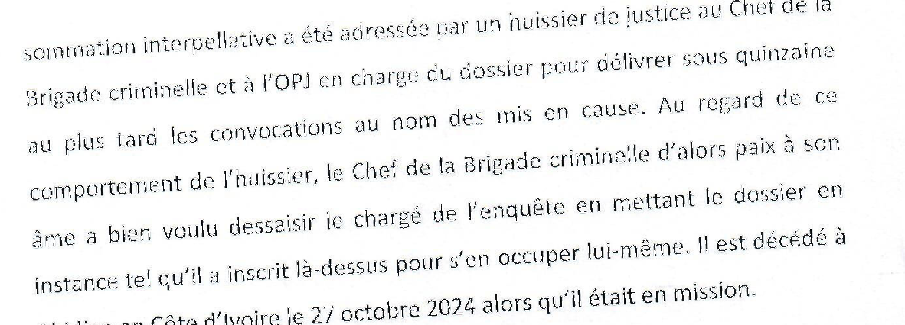
Mémoire du 29 avril 2025, p. 3 — signé Sabi Fulbert Konto
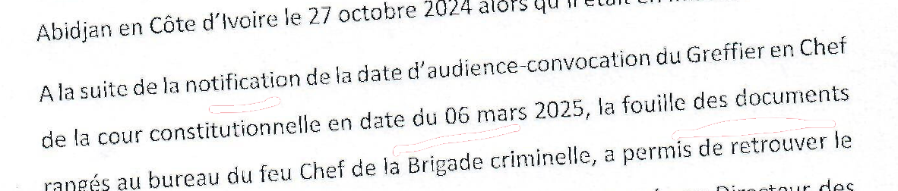
Mémoire du 29 avril 2025, p. 3 : décès du chef d'alors ; notification de la Cour du 6 mars 2025
0MOIS
du 3 avril 2024 au 6 mars 2025
0JOURS
de la notification de la Cour (6 mars) aux convocations du 12 mars
CE QUI A ÉTÉ FAIT
CE QUI A ÉTÉ ÉCRIT
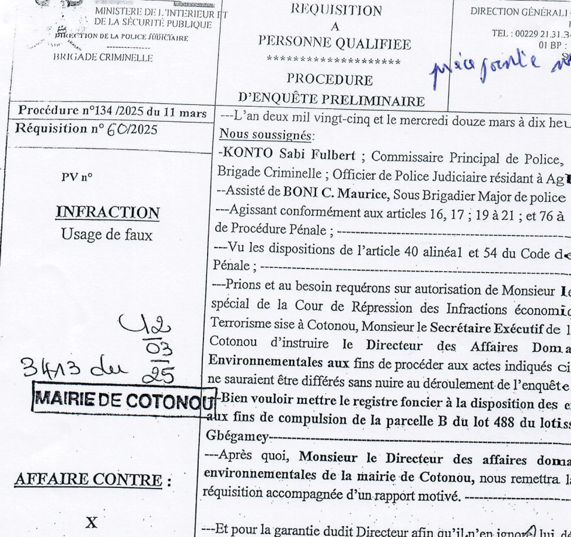
Réquisition n° 60/2025, procédure n° 134/2025 : Sabi Fulbert Konto, commissaire principal, assisté de Boni C. Maurice
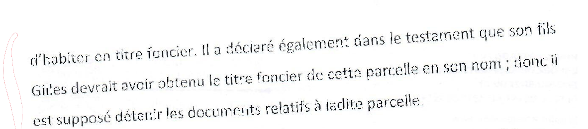
Mémoire du 29 avril 2025, p. 4 — signé Sabi Fulbert Konto
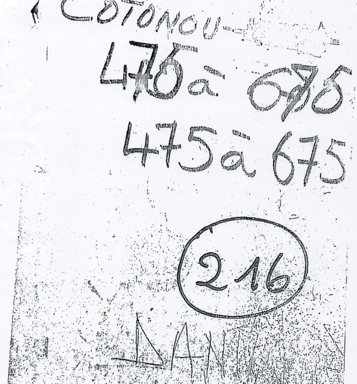
Page jointe à la lettre de la mairie du 27 mars 2025 : couverture du registre « Cotonou 475 à 675, n° 216 », décrite dans le procès-verbal de 2017
Mairie de Cotonou, 27 mars 2025 :
« je vous informe que la copie du répertoire est jointe à ladite réquisition »
« je vous informe que la copie du répertoire est jointe à ladite réquisition »
CE QUI A ÉTÉ FAIT
CE QUI A ÉTÉ ÉCRIT
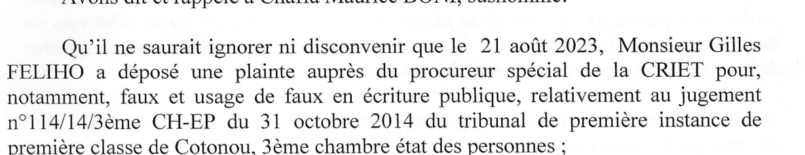
Sommation du 3 avril 2024 : la plainte du 21 août 2023, « relativement au jugement n°114/14/3ème CH-EP du 31 octobre 2014 »
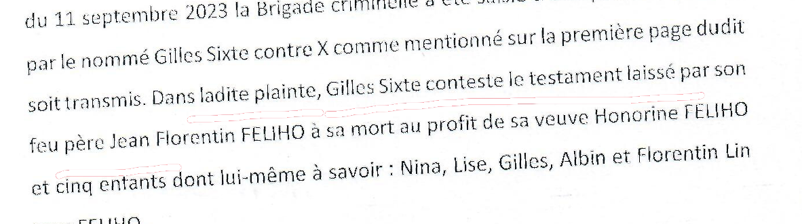
Mémoire du 29 avril 2025, p. 2 — signé Sabi Fulbert Konto
MAÎTRE FÉLIX AWÉ BALLEY
Procès-verbal n° 2 du 19 mars 2025 : « audition de témoin »
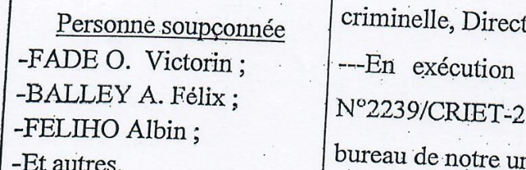
Même procès-verbal, en-tête : « Personne soupçonnée »
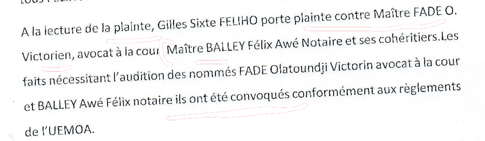
Mémoire du 29 avril 2025, p. 2 : « Gilles Sixte FELIHO porte plainte contre Maître FADE O. Victorien […] Maître BALLEY »
Sommation du 3 avril 2024 — personnes à convoquer :
FADE Victorien Olatundji · Lise FELIHO · Albin FELIHO · Florentin-Lin FELIHO · Nina FELIHO · HUNGBO Olivia Aubierge épouse KPLOCA
BALLEY : absent de la liste
FADE Victorien Olatundji · Lise FELIHO · Albin FELIHO · Florentin-Lin FELIHO · Nina FELIHO · HUNGBO Olivia Aubierge épouse KPLOCA
BALLEY : absent de la liste
CE QUI A ÉTÉ DEMANDÉ
CE QUI A ÉTÉ FAIT
1. FADE Victorien Olatundji, avocat
2. Lise FELIHO
3. Albin FELIHO
4. Florentin-Lin FELIHO
5. Nina FELIHO
6. HUNGBO Olivia Aubierge épouse KPLOCA, magistrate
Sommation du 3 avril 2024 : « les convocations au nom des mis en cause suivants et toute autre personne que l'enquête révélera »
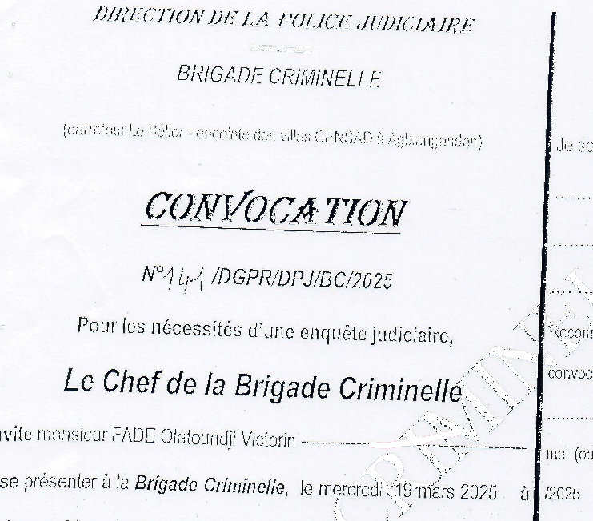
Convocation n° 141 du 12 mars 2025 : Maître Fade
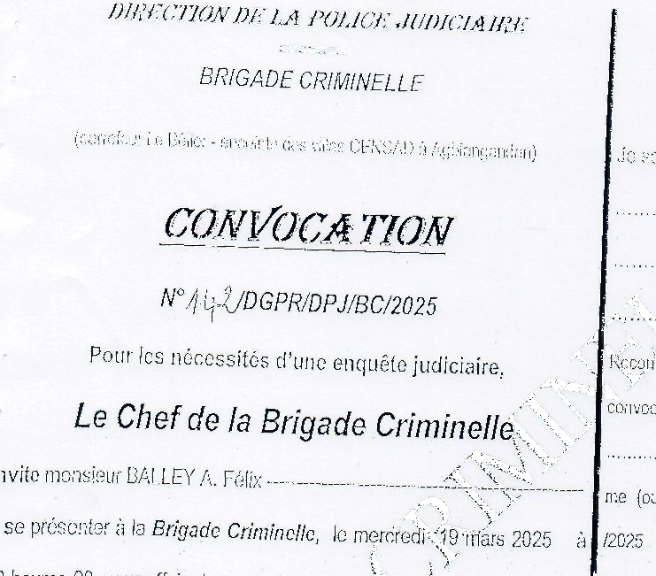
Convocation n° 142 : Maître Balley
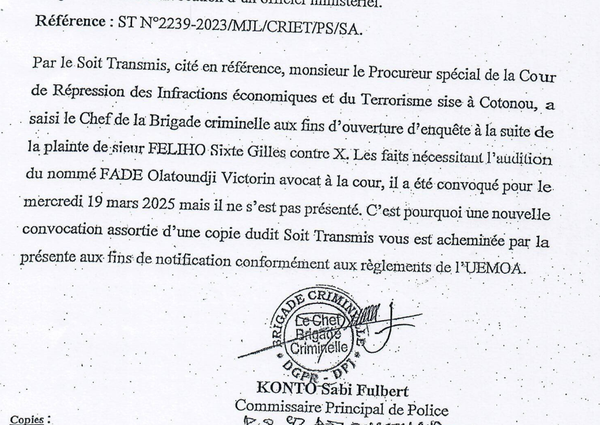
Relance de convocation du 25 mars 2025 : signée Sabi Fulbert Konto
LES COURRIELS DES 6 ET 7 AOÛT 2007
CE QUE LA PROCÉDURE PRODUIT
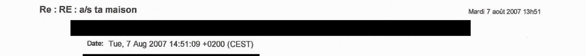
Courriel de Gilles Féliho à Lise Féliho, 7 août 2007 — « a/s ta maison » (adresses électroniques occultées)
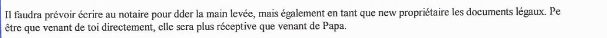
Message de Lise Féliho du 6 août 2007, p. 2
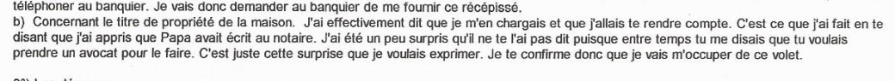
Réponse de Gilles Féliho du 7 août 2007, p. 1 : « Concernant le titre de propriété de la maison […] je vais m'occuper de ce volet »
Lise Féliho — sommation du 3 avril 2024 : personne à convoquer n° 2.
Convocations produites : n° 141 (Maître Fade), n° 142 (Maître Balley).
Aucune convocation à son nom.
Convocations produites : n° 141 (Maître Fade), n° 142 (Maître Balley).
Aucune convocation à son nom.

Lettre du notaire Denise Ehouzou Gangnito à Maître Victorien Fade, 19 septembre 2007 : adjudication au profit de Gilles Sixte Féliho
CE QUE LE NOTAIRE ÉCRIT (2007)
CE QUE DIT LE JUGEMENT (2014)
Lettre de Me Denise Ehouzou Gangnito, notaire, du 19 septembre 2007

Destinataire : Maître Victorien Fade, avocat à la Cour

Même lettre : « Suite à l'adjudication […] sur la parcelle « B » du lot 923 […] au profit de Monsieur Gilles Sixte FELIHO, dont vous êtes le mandataire »
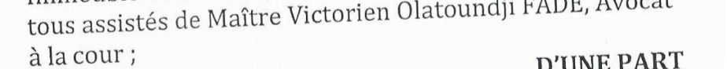
Jugement n° 114/14/3ème CH-EP du 31 octobre 2014, p. 1 : « tous assistés de Maître Victorien Olatoundji FADE, Avocat à la cour »
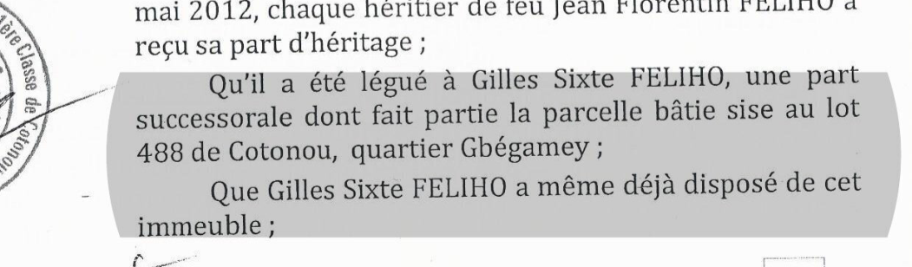
Même jugement, p. 5 : « la parcelle bâtie sise au lot 488 de Cotonou, quartier Gbégamey »
JUILLET 2009
testament
testament
3 DÉCEMBRE 2010
décès
décès
?
disposition « constatée » : ni date, ni acte
disposition « constatée » : ni date, ni acte
Jugement n° 114/14/3ème CH-EP, p. 5 : « Que Gilles Sixte FELIHO a même déjà disposé de cet immeuble »
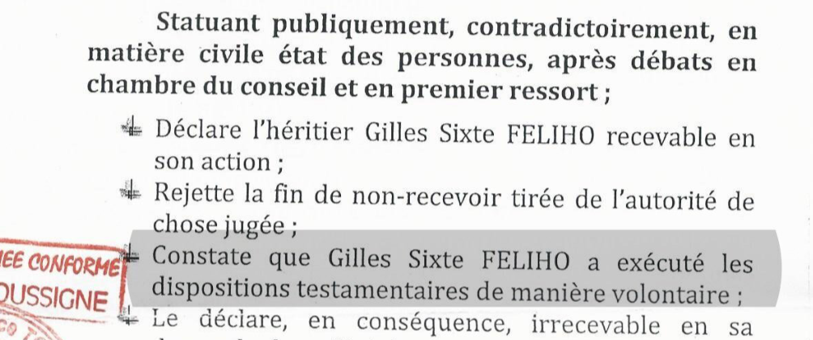
Même jugement, dispositif : « Constate que Gilles Sixte FELIHO a exécuté les dispositions testamentaires de manière volontaire »
Le juge « constate ».
Il ne dit pas l'avoir lu dans le testament.
Il ne dit pas l'avoir lu dans le testament.
Un testament ne peut pas constater
un acte postérieur au décès.
un acte postérieur au décès.
On ne peut déduire l'exécution des dispositions testamentaires
du testament lui-même.
du testament lui-même.
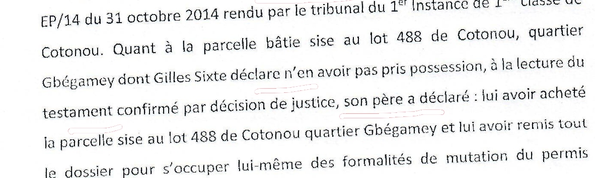
Mémoire du 29 avril 2025, p. 3 — signé Sabi Fulbert Konto
Un achat n'est pas un legs.
Une acquisition n'est pas une disposition.
Le testament n'est pas dans les pièces.
Une acquisition n'est pas une disposition.
Le testament n'est pas dans les pièces.
Faire dire au testament
ce qu'un testament ne peut pas dire.
ce qu'un testament ne peut pas dire.
CE QUE DIT LE JUGEMENT
CE QU'ÉCRIT LE MÉMOIRE
Jugement du 31 octobre 2014, dispositif : « en premier ressort »
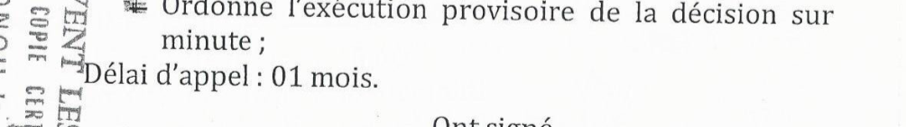
Même dispositif : « Ordonne l'exécution provisoire » ; « Délai d'appel : 01 mois »
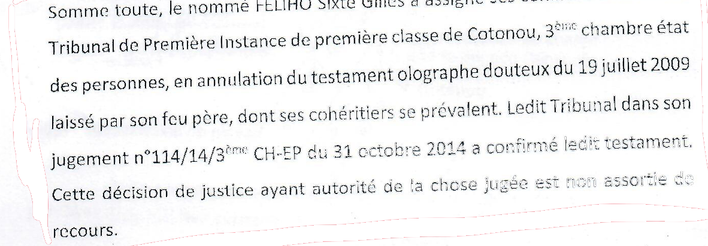
Mémoire du 29 avril 2025, p. 4 — signé Sabi Fulbert Konto
« Une usurpation des prérogatives judiciaires, sans aucune garantie procédurale »
Réplique du plaignant à la Cour constitutionnelle, 2 juin 2025
Réplique du plaignant à la Cour constitutionnelle, 2 juin 2025
Faire dire au testament ce qu'il ne peut pas dire.
Faire dire au jugement ce qu'il ne dit pas.
Faire dire au jugement ce qu'il ne dit pas.
CE QUE DIT LE TÉMOIN
CE QU'ÉCRIT LE MÉMOIRE
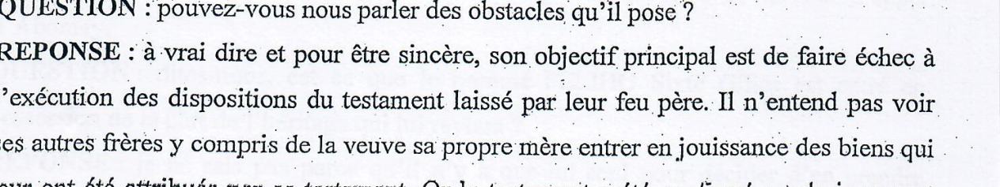
Procès-verbal d'audition de témoin n° 2 du 19 mars 2025, p. 2
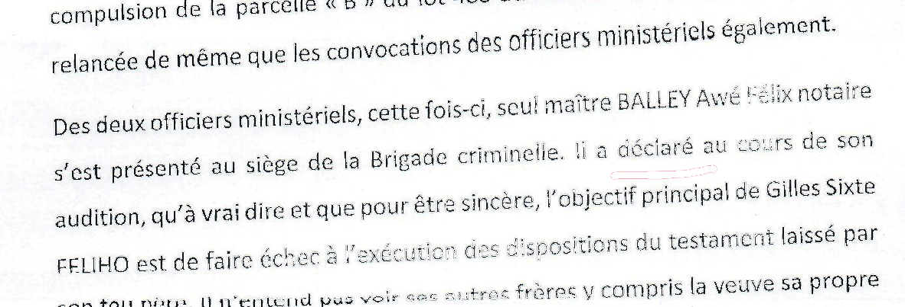
Mémoire du 29 avril 2025, p. 3 — signé Sabi Fulbert Konto
CE QUI EXISTE AU DOSSIER
CE QUI N'Y FIGURE PAS
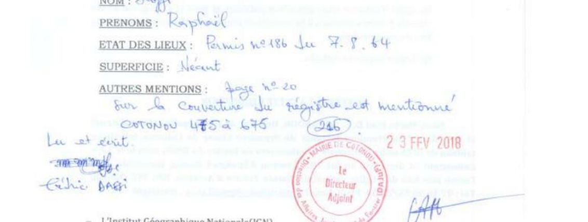
Procès-verbal de compulsion du 19 décembre 2017, p. 2 — Mairie de Cotonou : « SUPERFICIE : néant »
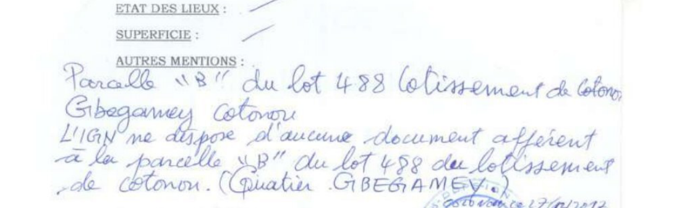
Même procès-verbal, p. 3 — IGN : « L'IGN ne dispose d'aucun document afférent à la parcelle B »
non mentionné dans le mémoire du 29 avril 2025
0JOURS
de la plainte (21 août 2023) à la notification de la Cour (6 mars 2025)
0JOURS
de cette notification au mémoire du 29 avril 2025
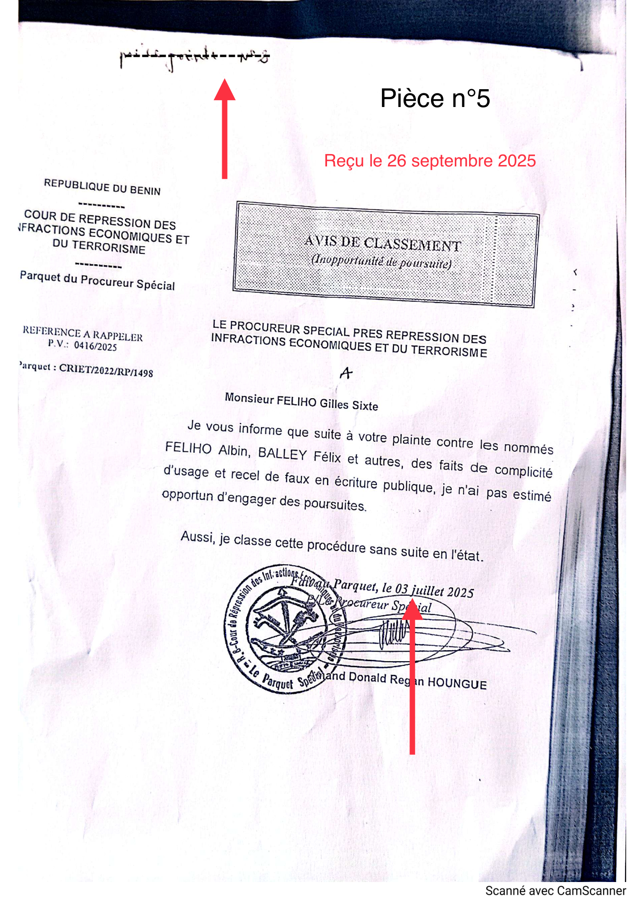
3
JUILLET
2025
0JOURS
du classement à l'audience du 15 juillet 2025
Pourquoi une sommation d'huissier est-elle devenue un « comportement » justifiant le retrait du dossier ?
Pourquoi les premières convocations produites datent-elles du 12 mars 2025, six jours après la notification de la Cour ?
Sur quelle pièce le jugement constate-t-il une disposition postérieure au décès ?
Sur quelle pièce le mémoire fonde-t-il que le plaignant est « supposé détenir » les titres, alors que le testament n'est pas produit ?
Pourquoi les autres personnes désignées par la sommation n'ont-elles pas été convoquées ?
Pourquoi le procès-verbal de compulsion de 2017 n'est-il pas discuté ?
wadagni2026-verite.com
Les pièces reproduites dans ce film sont publiées dans leur intégralité sur le site, avec leurs empreintes numériques.
Les extraits reproduits sont des copies partielles. Les annotations rouges des originaux ont été effacées des recadrages ; les coordonnées personnelles sont occultées.
Le chef de la Brigade criminelle d'avril 2024 est désigné par la lettre du 29 avril 2025 comme « le Chef d'alors », sans être nommé. Le testament est daté du 16 juillet 2009 dans le procès-verbal de compulsion et du 19 juillet 2009 dans le jugement.
Le chef de la Brigade criminelle d'avril 2024 est désigné par la lettre du 29 avril 2025 comme « le Chef d'alors », sans être nommé. Le testament est daté du 16 juillet 2009 dans le procès-verbal de compulsion et du 19 juillet 2009 dans le jugement.